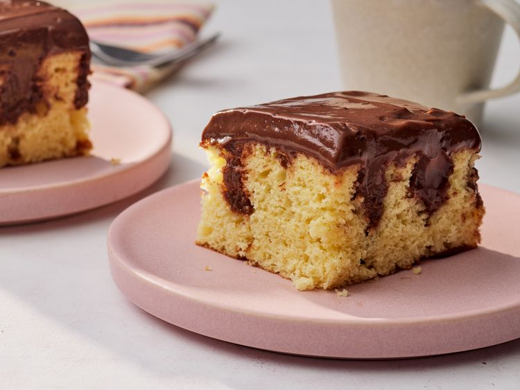

Pudding Poke Cake

Description
This recipe uses Jell-O instant pudding and yellow cake mix.
The baked cake is poked with holes, then covered with chocolate pudding, making it look striped when cut.
Ingredients
- cooking spray
- 1 (15.25 ounce) package yellow cake mix
- 1 cup water
- 3 large eggs
- ⅓ cup vegetable oil
- 2 (3.9 ounce) packages instant chocolate pudding mix
- 4 cups milk
Steps
- Preheat the oven to 350 degrees F (175 degrees C). Grease a 9x13-inch baking dish with cooking spray.
- Beat cake mix, water, eggs, and oil in a large bowl with an electric mixer at low speed until moistened, about 30 seconds. Beat at medium speed for 2 minutes.
- Pour batter into the prepared baking dish.
- Bake in the preheated oven until a toothpick inserted into the center of cake comes out clean, 21 to 25 minutes.
- Poke holes immediately into warm cake with the round handle of a wooden spoon. Holes should be at 1 inch intervals and extend down to the bottom of the baking dish.
- Combine pudding mix with confectioners' sugar in a separate large bowl and gradually stir in milk. Beat with an electric mixer at low speed for 1 minute; do not overbeat.
- Pour 1/2 of the pudding mixture immediately over warm cake and into holes.
- Let remaining pudding thicken slightly at room temperature, then spoon over the top and spread to cover. Chill in the refrigerator for at least 1 hour before serving. Store leftovers in the refrigerator.
Back to index